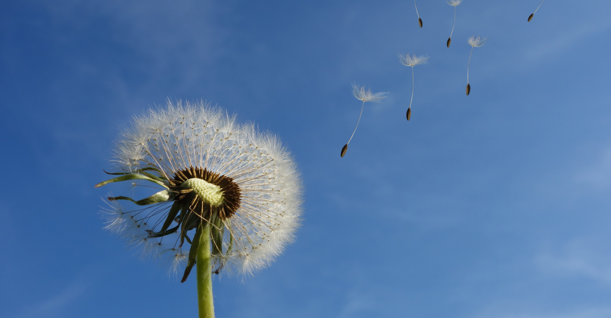
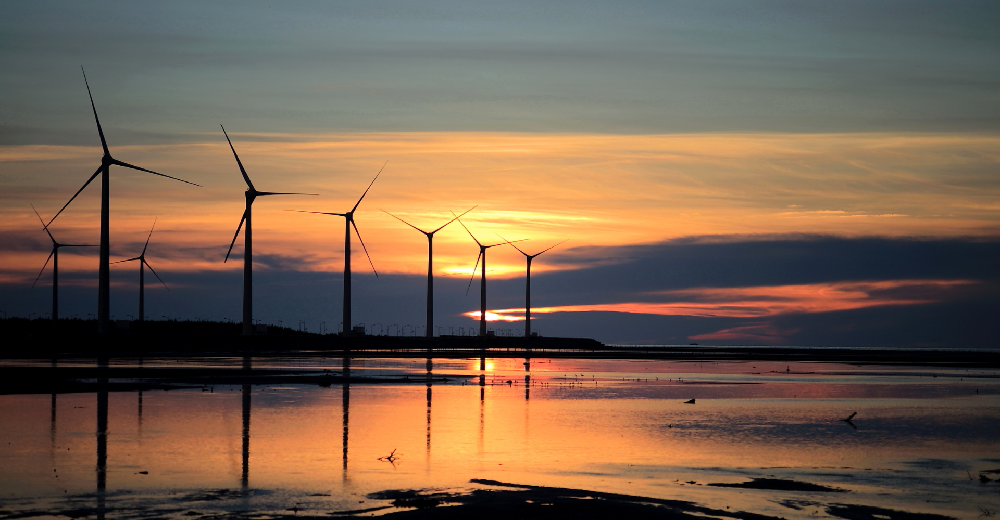
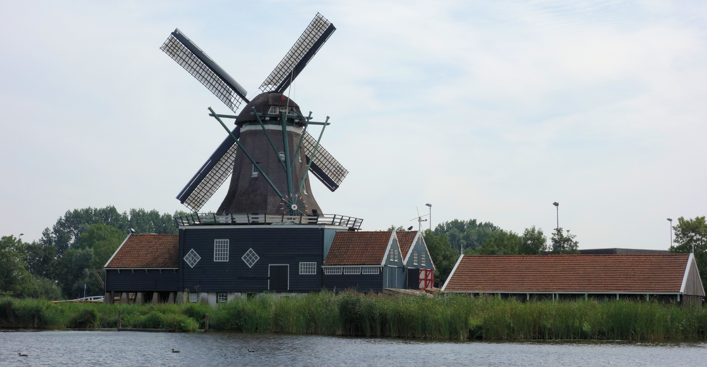

O vento é um recurso natural abundante e de grande importância para o equilíbrio climático e para a geração de energia limpa e renovável. Ele é causado pelo movimento do ar, que ocorre devido às diferenças de pressão atmosférica geradas pelo aquecimento desigual da Terra pelo Sol. O vento não só tem um impacto significativo nos ecossistemas e no clima, mas também vem sendo cada vez mais utilizado pelos seres humanos como uma fonte de energia, contribuindo para um futuro mais sustentável.

Do ponto de vista ecológico, o vento desempenha um papel fundamental na regulação do clima e na distribuição de calor e umidade ao redor do planeta. Ele ajuda a transportar calor das regiões tropicais para as polares e a distribuir a umidade, influenciando os padrões de precipitação e a formação de nuvens. O vento também auxilia na dispersão de sementes e pólen, o que é essencial para a reprodução de muitas plantas e para o equilíbrio dos ecossistemas naturais.
Nos últimos anos, o vento se tornou uma fonte de energia renovável de grande destaque, especialmente com o avanço da tecnologia e a popularização das turbinas eólicas. A energia eólica é gerada quando o movimento do vento é captado pelas lâminas das turbinas e convertido em eletricidade. Essa forma de energia é limpa e sustentável, pois não emite gases poluentes ou contribui para o aquecimento global, ao contrário dos combustíveis fósseis. Em muitos países, a energia eólica já desempenha um papel importante na matriz energética, sendo utilizada tanto em grande escala, em parques eólicos, como em pequenas instalações.

Além disso, o vento é utilizado há séculos em diversas culturas, como uma fonte de energia para navegação (com as velas dos barcos) e para o bombeamento de água em áreas rurais, especialmente em regiões secas ou remotas. Em algumas localidades, o vento também é empregado em moinhos para a moagem de grãos, contribuindo para a produção de alimentos.
Embora o vento seja um recurso abundante e amplamente disponível, ele também apresenta desafios. A intensidade do vento pode variar de acordo com a localização e as condições climáticas, o que exige uma infraestrutura adaptável e eficiente para aproveitar seu potencial de maneira constante. Além disso, o impacto ambiental das turbinas eólicas, como o risco de colisão com aves e morcegos, e o impacto visual em algumas paisagens, precisam ser considerados e mitigados.

Em resumo, o vento é um recurso natural fundamental, tanto para o funcionamento dos ecossistemas quanto para o fornecimento de energia limpa e renovável. Seu uso sustentável pode ajudar a reduzir a dependência de fontes de energia poluentes, contribuindo para a preservação ambiental e o combate às mudanças climáticas. A busca por tecnologias mais eficientes e a conscientização sobre a importância do vento como recurso são passos essenciais para garantir que este potencial seja aproveitado de forma equilibrada e responsável.